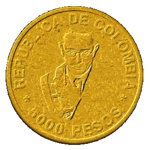

about me
 Software:
Software:
Torta
Karmack
Plata
FUmanchu!
Rants:
AboutMe
Blogging
El origen del hombre americano
Propositos2006
Propositos2007
SWFing
Pictures:
Sicilia -
thumbs
Visita Dimo 2007 -
thumbs
Tokyo -
thumbs
Barcelona -
thumbs
Lisbon -
thumbs
Gilberto Gil -
thumbs
Visita Fidel -
thumbs
Hiver -
thumbs
Dogs -
thumbs
Italy -
thumbs
Eurockeennes -
thumbs
Grenoble -
thumbs
Chipie -
thumbs
Place aux Herbes -
thumbs
Eek Friends:
 Alejo Alejo
Javier
Nelson
Old Posts:
Archive
Created with:
emacs
bash
libXSLT


 Dimo's Art
Quebec Hispano
Dimo's Art
Quebec Hispano
|
|
2006 - January |
|
Ayer estuvé, con Andrea y un par de amigos colombianos que estaban de visita, en el concierto de Oasis que dieron en Grenoble. Se suponía que en Europa iban a tocar con Stereophonics, pero finalmente estos cancelaron y los que abrieron el concierto fueron los de una banda llamada Yeti, que en últimas estuvo como buena. El concierto en general estuvo bueno, Liam Gallagher juega completamente su rol de tipo arrogante, haciendo cara de creerse dios, etc. Vaya uno a saber hasta que punto el papel es real o corresponde a un guión meticulosamente planeado.
Como nunca he sido entusiasta de esta banda, no conocía sino las tres o cuatro canciones que un no iniciado puede conocer. El próximo sábado si podré corear las canciones un poco mas viendo a Depeche Mode en Lyon.
Por el estado de avance de la tesis ni pregunten...
|
|
Una manera sencilla de generar HTML que represente código de programación, con "syntax highlight", es usando el editor de texto vim. Por ejemplo:
gvim -f +"syn on" +"run! syntax/2html.vim" +"wq" +"q" lines.lisp
genera un archivo con código HTML, que puedo copiar y pegar aquí:
(use-package :gordon
)
(with-movie (m "line.swf"
:width 5000
:height 5000
:frame-rate 12
:bgcolor *white*)
(add-shape m 1 1
(draw-shape-with-style `((
(0 0)
(5000 5000)
)))
0 0)
(add-tag m (make-tag-end)))
|
|
Muchas personas, más que todo guiadas por ideología, atribuyen toda la innovación tecnológica a esfuerzos de empresas privadas. La realidad es que las industrias tecnológicas de punta no existirían hoy en día de no ser por la financiación de la investigación con dinero público. Esto es facil de comprobar en muchos sectores. Es bien sabido que la industria de los computadores era todo menos rentable en los años 50 y que de no ser por inversión federal de los Estados Unidos, nunca se hubiese desarrollado como industria. Internet es el producto de investigación pagado con dinero público, la historia esta por ahí para que cualquiera la lea. Seguramente las empresas de biotecnología le deben su existencia tambien a investigación financiada con dinero público.
Voy a citar a Bill Gates (senior ;)):
|
"There are some things that our government does with its tax money which directly create personal wealth and that is the enormous federal research activity. Do you know there would not be an Internet but for federal research money? There would not be new biotechnological companies but for the federal research effort. There would not be an examination of the human genome without the federal research effort. In those university laboratories is the seed of the health of our economy."
"The individual wealth which is generated in this economy is, in my
judgment, and I doubt that there is much that anyone could disagree
with about this, is a function of the innovative businesses which are
created as a result of federal research. [...] So, if
somebody starts a software company or a biotechnology company, or even
if somebody owns a building in downtown Washington which you rent to
those people, it starts from the same place. It starts from this
incredible research activity which is going on with federal money."
|
El resto está aquí.
|
|
|
Es dificil decidir por quien votar para las proximas elecciones sin saber que es lo que proponen los candidatos (mejor, es muy facil votar así, pero entonces el voto no significa mucho). Casi todo lo que sabemos la mayoría de nosotros sobre los candidatos es información ya masticada por los periodistas de El Tiempo y Semana. Por ejemplo, casi nadie sabe que es lo que propone concretamente Serpa (entre otras cosas porque no es evidente como encontrar sus ideas escritas en alguna parte) pero muchos le creen (creemos?) a tipos como Mauricio Vargas cuando nos dicen que el candidato liberal es el representante de "una izquierda trasnochada". Con esa profundidad de debate nos quedamos la mayor parte de las veces. Yo creo que si le preguntamos a Mauricio Vargas cuales puntos son los que le parecen trasnochados, no nos va a saber responder muy bien. Es cuestión de imagen. En fin, esto que digo solo me compromete a mí, tal vez ustedes si estén más informados de las ideas de cada cual.
De Uriba si tenemos evidencias más concretas de como va a gobernar, porque ya lo ha hecho durante 4 años. Sabemos, por ejemplo, que si nos vuelve a decir que en 4 años ya estarán casi totalmente desaparecidos los cultivos de coca, no habrá que creerle mucho. Tambien sabemos que no es imposible que le de por cambiar las reglas de las elecciones a la mitad de su mandato.
Esta entrevista con Antanas Mockus puede ayudar a comprender un poco que es lo que él propone como candidato. Me gusta el énfasis que pone en la educación. Por ahora me inclino a apoyar ese candidato.
|
|
El popularisimo Drayru me ha enviado la papa caliente, lo que quiere decir que estoy obligado por el código de honor de "la internet" a confesar 5 particularidades sobre mi mismo. Sin más preambulo y sin ninguna verguenza, me entrego a ese ejercicio de vanidad pura:
- Hasta mas o menos los 19 años, me dormía a más tardar a las ocho y media de la noche.
- Frecuentemente me toca ponerme medias de distinto tipo en cada pie, cuando se me han perdido y llevo un buen tiempo sin lavar ropa.
- Me como las uñas.
- No se bailar.
- En el lado positivo: soy incapaz de durar de mal genio mas de cinco minutos.
Ahi la paso la bola a javo.
|
|
|
Esta lectura que explica la relación entre dolares y petroleo está muy entretenida. No tengo idea si es pura provocación o si puede ser tomada en serio, así que cualquier comentario informado es bienvenido. Bueno, comentarios no informados también son bienvenidos, al fin y al cabo esto es internet :P.
|
|

Finalmente ganó la candidata Michelle Bachelet. Sobra decir que me parece muy buen síntoma que en un país de america latina se haya podido elegir a una madre soltera como presidente. No estoy diciendo que una mujer divorciada vaya a ser una buena presidenta solo por eso, estoy diciendo que es un buen síntoma que haya podido ser elegida, algo definitivamente impensable hace no muchos años, en nuestros paises dominados por el machismo y otras mentalidades retrogradas. Para ver un ejemplo de la mentalidad de la que hablo, basta visitar este blog, el cual, medio en serio medio en broma, expone la presentación de Miguel Bose en su campaña como un argumento para no votar por Bachelet, aterrado de la "perversión" del artista.
En fin, parece que se ha confirmado el tal giro a la izquierda en america latina. Yo no he leido practicamente nada de lo que dicen los presidentes que hacen parte del pretendido giro, así que no me atrevo a afirmar si me parece algo positivo o negativo. Para leer otras opiniones (seguramente más informadas) al respecto, los invito nuevamente a leer este post de Sergio Mendez, o este analisis, también excelente.
Hay que ser precavidos. En nuestros paises la cosa está tan mal que cualquier militar echando discursos nacionalistas del peor tipo se puede hacer calificar "de izquierda" por los medios tradicionales simplemente por incrustar dentro de su oratoria una que otra idea sobre hacer pasar en primer lugar los intereses del país, es decir, los de la mayoría. La alucinante idea de que nuestros países puedan tomar decisiones independientemente de los dictados de Washington es otra idea que hace que nuestros noticieros califiquen inmediatamente al candidato como poco menos que un comunista y aliado de Al-Qaeda, independientemente del resto de lo que diga. Así que cuando me hablan de un giro a la izquierda, prefiero esperar a ver.
|
|
|
Dos posts recientes sobre política en la blogosfera colombiana que me parecieron buenos: el chico de la tapa con Bonito Así y Sergio Mendez con A qué juega la izquierda en Latinoamérica?.
A proposito, tengo que dejar de escribir entradas de tres renglones y escribir algo de verdad :P.
|
|
|
Quisiera tener este teclado!
Every key of the Optimus keyboard is a stand-alone display showing exactly what it is controlling at this very moment.
No creo que aumente para nada la productividad... pero que se ve bien, se ve bien!
|
|
|
No dejen de leer este chiste. Es una traducción de un chiste en ingles un poco misógino.
|
|
|
En el ejercito de Colombia, o por lo menos en donde yo estaba, que era el batallon de policía militar numero 15 "Bacatá", uno duerme en unos camarotes de aspecto ordinario, que no son otra cosa que cuatro marcos metálicos mal pintados de negro y ensamblados con tornillos. Una noche en la que estabamos ahí hablando pendejadas (era la época en la que nos dejaron cuidando las paredes de lo que quedaba en la 100 con autopista luego del translado al cantón norte) el camarote que quedaba al lado del mío comenzo a deformarse, de manera que la cama de arriba se unió con la de abajo, pero no totalmente. En resumen, la parte que da a los pies aún se sostenía a medias, pero la cabeza del infeliz que estaba durmiendo abajo (creo que era Talero) quedo prisionera entre la almohada y el marco metálico de la cama superior, soportando el peso del jayán de arriba (creo que era Cespedes). La cosa duro así como 5 segundos, el tiempo de darnos cuenta y saltar a ayudar al tipo. Durante esos segundos lo único que se veia de Talero era la parte de la frente que no quedaba cubierta por la cama de arriba. Por alguna razón la desagradable imagen de esa frente ahi apresada me quedo grabada y me acuerdo de ella de tanto en tanto. A Talero no le pasó nada, pero quedo turuleto un rato.
|
|
|
Se rumora que este año podría salir en Colombia una nueva moneda con un valor de 5000 pesos oro. Fuentes cercanas a este blog lograron infiltrarse en el banco de la república y tomar fotos del prototipo.

|
|
|

 Save this post]
Save this post]